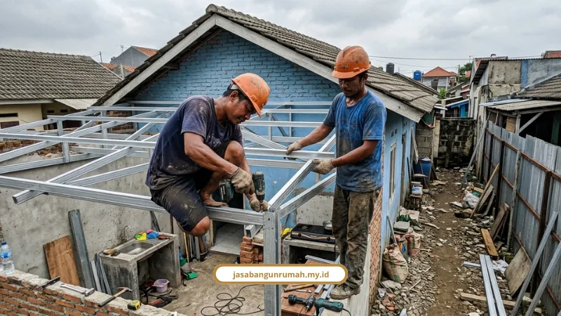

Daftar Isi
- Apakah Rumah Subsidi Boleh Direnovasi?
- Apa Bedanya Renovasi Ringan dan Renovasi Besar?
- Apa yang Dilarang dan Apa Sanksinya?
- Apakah Renovasi Rumah Subsidi Perlu PBG?
- Berapa Biaya Renovasi Dapur Belakang Rumah Subsidi?
- Berapa Total Biaya Renovasi Rumah Subsidi Tipe 36/72?
- Lebih Hemat Tukang Harian atau Borongan?
- Bagaimana Urutan Renovasi Bertahap yang Ramah Kantong?
- Kenapa Renovasi Rumah Subsidi Cocok Ditangani Jasa Bangun Rumah?
Memakai jasa bangun rumah subsidi itu legal untuk renovasi ringan seperti dapur, kanopi, dan pagar. Renovasi besar baru boleh setelah cicilan berjalan lima tahun.
Kunci rumah baru diserahkan, dapur belakang masih tanah kosong, dan dompet belum siap boncos. Di bawah ini ada batas aturan PUPR, angka biaya per komponen, dan simulasi total Rp80 juta untuk tipe 36/72, supaya Anda bisa berhitung sebelum tukang datang.
Angka yang perlu dipegang lebih dulu:
- Dapur belakang 2x3 meter versi hemat: Rp3 juta sampai Rp6 juta.
- Dapur belakang 2x3 meter versi minimalis estetik: Rp7 juta sampai Rp15 juta.
- Renovasi depan dan belakang rumah subsidi tipe 36/72: sekitar Rp80 juta.
- Renovasi besar: cicilan harus berjalan minimal 5 tahun.
- Batas luas: tanah 60 sampai 200 m², bangunan maksimal 36 m².
Sisanya urusan detail. Kita mulai dari yang paling bikin deg-degan: aturan.
Apakah Rumah Subsidi Boleh Direnovasi?
Boleh, selama pemilik rumah lebih dulu melapor dan mendapat persetujuan bank penyalur KPR. Dasarnya Peraturan Menteri PUPR Nomor 35 Tahun 2021 tentang Kemudahan dan Bantuan Pembiayaan Perumahan bagi Masyarakat Berpenghasilan Rendah.
Junaidi Abdillah, Ketua Umum DPP Apersi, menyebut pemilik boleh menambah kamar, dapur, kanopi garasi, maupun pagar. Batasannya jelas: sebelum 5 tahun rumah "tidak boleh mengubah bangunan utama atau induk".
Jadi yang dijaga ketat bukan renovasinya, melainkan bangunan induknya. Dapur di lahan belakang aman, merobohkan ruang tamu tidak.
Apa Bedanya Renovasi Ringan dan Renovasi Besar?
Renovasi ringan boleh dikerjakan kapan saja, sedangkan renovasi besar wajib menunggu cicilan berjalan minimal 5 tahun. Keduanya tetap butuh izin bank penyalur KPR.
Renovasi ringan yang boleh dikerjakan kapan saja:
- Menambah dapur di sisa lahan belakang
- Memasang kanopi
- Memagar rumah
- Mengecat ulang
- Memasang keramik
- Membuat sekat ruangan
Renovasi besar, yaitu merombak bangunan induk atau menambah lantai baru, baru diperbolehkan setelah cicilan berjalan 5 tahun.
Apa yang Dilarang dan Apa Sanksinya?
Rumah subsidi dilarang diubah fasadnya, dibongkar total sebelum 5 tahun, dan difungsikan sebagai tempat usaha. Pelanggaran bisa membuat subsidi KPR dicabut.
Daftar larangan utamanya:
- Mengubah fasad, yaitu tampilan muka bangunan utama
- Membongkar total rumah sebelum 5 tahun
- Melampaui batas luas tanah 60 sampai 200 m² dan luas bangunan maksimal 36 m²
- Memfungsikan rumah sebagai tempat usaha atau komersial
- Menyewakan atau mengalihkan kepemilikan sebelum 5 tahun, kecuali karena pewarisan
Rumah yang dibongkar habis sebelum 5 tahun dianggap milik konsumen yang mampu, sehingga bantuan subsidi dapat dicabut. Menyewakan atau mengalihkan rumah sebelum 5 tahun berujung pengembalian seluruh dana subsidi yang sudah diterima.
Jujur saja, aturan ini bikin mimpi rumah dua lantai harus antre lima tahun. Kami lebih memilih bilang terus terang di awal daripada Anda kena masalah belakangan.
Apakah Renovasi Rumah Subsidi Perlu PBG?
Perlu, kalau renovasi mengubah struktur atau menambah luas bangunan. PBG (Persetujuan Bangunan Gedung) adalah pengganti IMB, berdasarkan UU No. 11/2020 tentang Cipta Kerja dan PP No. 16/2021.
Pengurusannya bisa dilakukan online lewat SIMBG di www.simbg.pu.go.id. Mengecat ulang atau mengganti keramik tidak mengubah struktur, jadi urusannya berbeda dengan membangun dapur permanen.
Untuk berkas dan urutan izin, syarat renovasi rumah subsidi yang berlaku sebaiknya dicek poin demi poin sebelum tukang mulai bekerja.
Berapa Biaya Renovasi Dapur Belakang Rumah Subsidi?
Dapur belakang ukuran 2x3 meter berkisar Rp3 juta sampai Rp6 juta untuk versi hemat, dan Rp7 juta sampai Rp15 juta untuk versi minimalis estetik.
Versi hemat fokus pada atap spandek atau baja ringan, cor lantai, serta keran dan wastafel. Versi minimalis estetik menambah atap kombinasi transparan, dinding aci dan cat, kitchen set atau meja cor granit, serta sanitari.

Rincian komponen biayanya:
- Atap atau kanopi dapur (baja ringan + spandek/polycarbonate): Rp2,5 juta sampai Rp5 juta
- Cor lantai dan keramik/granit: Rp1,5 juta sampai Rp3 juta
- Dinding tambahan dan cat dapur: Rp1,3 juta sampai Rp3,2 juta
- Meja cor atau kitchen set sederhana: Rp2 juta sampai Rp5 juta
- Wastafel dan instalasi air: Rp500 ribu sampai Rp1,7 juta
- Upah tukang borongan atau harian 5 sampai 10 hari: Rp1,5 juta sampai Rp5 juta
Paket hemat tidak memakai semua komponen sekaligus, karena fokusnya hanya atap, lantai, dan air.
Hitungan per tahap kerja untuk lahan belakang dibahas lebih dalam di ulasan biaya renovasi rumah subsidi. Kalau masih bingung soal tampilan, ada banyak desain dapur rumah subsidi yang muat di lahan mungil.
Berapa Total Biaya Renovasi Rumah Subsidi Tipe 36/72?
Renovasi lengkap depan dan belakang rumah subsidi tipe 36/72 berada di sekitar Rp80 juta. Angka ini berasal dari studi kasus dengan spesifikasi yang cukup lengkap.
- Area depan, teras, dan carport: ±Rp45 juta. Isinya kanopi baja ringan, plafon PVC, carport keramik motif batu kali 40x40, pagar besi laser cutting, dan pilar roster.
- Dapur serta tempat cuci jemur belakang: ±Rp35 juta. Isinya lantai dan meja dapur granit 60x60, kompor tanam, toren air, dan plafon PVC.
Pekerjaan depan dalam studi kasus ini berupa kanopi, plafon, carport, dan pagar, bukan perombakan bangunan induk. Angka Rp80 juta juga bukan kewajiban, karena paket dapur hemat tadi tetap bisa berjalan sendiri.
Lebih Hemat Tukang Harian atau Borongan?
Tukang harian lebih murah per hari untuk pekerjaan kecil, tetapi berisiko molor jika tidak diawasi. Borongan total mulai Rp4.000.000 per m² dan biayanya terkunci sejak awal.
- Upah tukang harian: Rp150.000 sampai Rp250.000 per hari. Cocok untuk pekerjaan kecil atau spesifik.
- Borongan jasa saja: Rp1.500.000 sampai Rp2.200.000 per m². Pemilik rumah membeli material sendiri.
- Borongan total (jasa + material): mulai Rp4.000.000 per m² untuk kelas sederhana atau ekonomis. Lebih praktis dan cepat.
Bagaimana Urutan Renovasi Bertahap yang Ramah Kantong?
Prioritaskan atap, lantai, dan sanitasi lebih dulu, baru urusan tampilan menyusul. Urutan ini menjaga rumah tetap bisa dipakai di setiap tahap tanpa menghabiskan anggaran sekaligus.
- Atap atau kanopi dapur: Rp2,5 juta sampai Rp5 juta.
- Cor lantai dan keramik: Rp1,5 juta sampai Rp3 juta.
- Wastafel dan instalasi air: Rp500 ribu sampai Rp1,7 juta.
- Dinding tambahan dan cat: Rp1,3 juta sampai Rp3,2 juta.
- Meja cor atau kitchen set sederhana: Rp2 juta sampai Rp5 juta.
Tahap 4 dan 5 bisa menunggu tabungan berikutnya kalau anggaran mepet.
Kenapa Renovasi Rumah Subsidi Cocok Ditangani Jasa Bangun Rumah?
Karena urusan aturan, RAB, dan eksekusi bisa dipegang satu tim. Jasa Bangun Rumah berdiri sejak 2010, menyelesaikan lebih dari 250 proyek, dengan 40+ tim profesional dan tingkat kepuasan klien 98%.
Empat keunggulan yang paling terasa bagi pemilik rumah subsidi:
- Tim bersertifikat: ditangani arsitek dan insinyur sipil berpengalaman.
- RAB transparan: biaya jelas di awal tanpa biaya tersembunyi.
- Garansi struktur: jaminan setelah pengerjaan selesai.
- Layanan fleksibel: desain saja, borongan konstruksi, atau paket design & build yang lebih hemat biaya dan waktu.
Layanan yang bisa disesuaikan dengan kebutuhan:
- Jasa renovasi bangunan gedung untuk renovasi ringan sampai perubahan struktur
- Jasa arsitek dan jasa desain interior untuk ruang fungsional, pencahayaan alami, dan sirkulasi udara
- Jasa kontraktor rumah dan jasa kontraktor bangunan untuk konstruksi standar SNI dengan manajemen proyek rapi
- Layanan pendukung: pengurusan PBG/IMB, RAB detail, konsultasi teknis, dan pengawasan konstruksi independen. Kebutuhan lain ada di layanan lainnya
Kata klien kami:
- Budi Santoso (rumah tinggal, Bekasi): "Proses pembangunan rumah kami berjalan sangat rapi. Tim selalu memberi kabar perkembangan proyek dan hasilnya jauh melebihi ekspektasi kami."
- Siti Aminah (pemilik ruko, Surabaya): "Kami sangat terbantu dengan RAB yang transparan sejak awal, tidak ada biaya tak terduga. Renovasi ruko kami selesai lebih cepat dari jadwal."
- Dewi Lestari (desain interior, Malang): "Desain interior yang diusulkan benar-benar mencerminkan karakter keluarga kami."
Satu hal yang perlu kami jujurkan: kami tidak bisa membantu membongkar fasad atau menambah lantai sebelum 5 tahun. Itu batas aturan, bukan kebijakan kami.
Rumah subsidi boleh direnovasi. Renovasi ringan seperti dapur, kanopi, dan pagar bisa dikerjakan kapan saja dengan izin bank, sedangkan renovasi besar menunggu cicilan lima tahun.
Untuk anggaran, dapur 2x3 meter mulai Rp3 juta, dan renovasi depan plus belakang tipe 36/72 sekitar Rp80 juta. Mau tahu angka yang pas untuk rumah Anda? Konsultasi gratis dan penyusunan RAB bersama tim Jasa Bangun Rumah bisa dimulai lewat WhatsApp 0889-8964-3555 atau email info@jasabangunrumah.my.id.